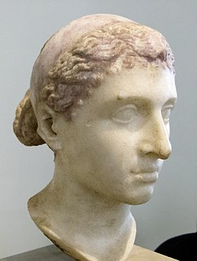

Cleópatra VII Filopátor foi a última governante ativa do Reino Ptolemaico do Egito. Como membro da dinastia ptolemaica, foi descendente de Ptolemeu I Sóter, um general greco-macedônio e companheiro de Alexandre, o Grande.
Reinado : 51 a.C. a 10 ou 12 de agosto de 30 a.C
O nome Cleópatra é originário do grego antigo Kleopatra (em grego: Κλεοπάτρα), que significa "glória de seu pai" na forma feminina
Busto romano da rainha usando um diadema, c. século I a.C. (época de suas visitas a Roma em 46–44 a.C.)
Cleópatra de Berlim, foi descoberta numa vila italiana ao longo da Via Ápia e encontra-se exposta no Museu Antigo, na Alemanha
Filmes
Na internet podemos encontrar diversos filmes que falam sobre a rainha do Egito
A seguir uma lista deles:
Cleópatra
Os Apuros de Cleópatra
As Legiões de César
Duas Noites com Cleópatra
A Serpente do Nilo
César e Cleópatra
Alexandria
Antony and Cleopatra
Maridos da Rainha
Como muitos sabem, antigamente, nas familias era comum casar-se com seu parente, assim, "continuando com a linhagem pura"
Com a maior Rainha nn foi diferente! A seguir a lista de seus maridos/Cônjuge:
Ptolemeu XIII Téo Filópator, Rei
Marco Antônio
Ptolemeu XIV,Faraó
Qual a cor da pele de Cleópatra?
De pele branca, olhos claros e traços europeus, a atriz se constituiu como referência à beleza da governante egípcia mais famosa da história.
Mas, apesar disso, os arquivos históricos não parecem confirmar tal construção, já que apontam a ascendência mista e parcialmente africana da rainha